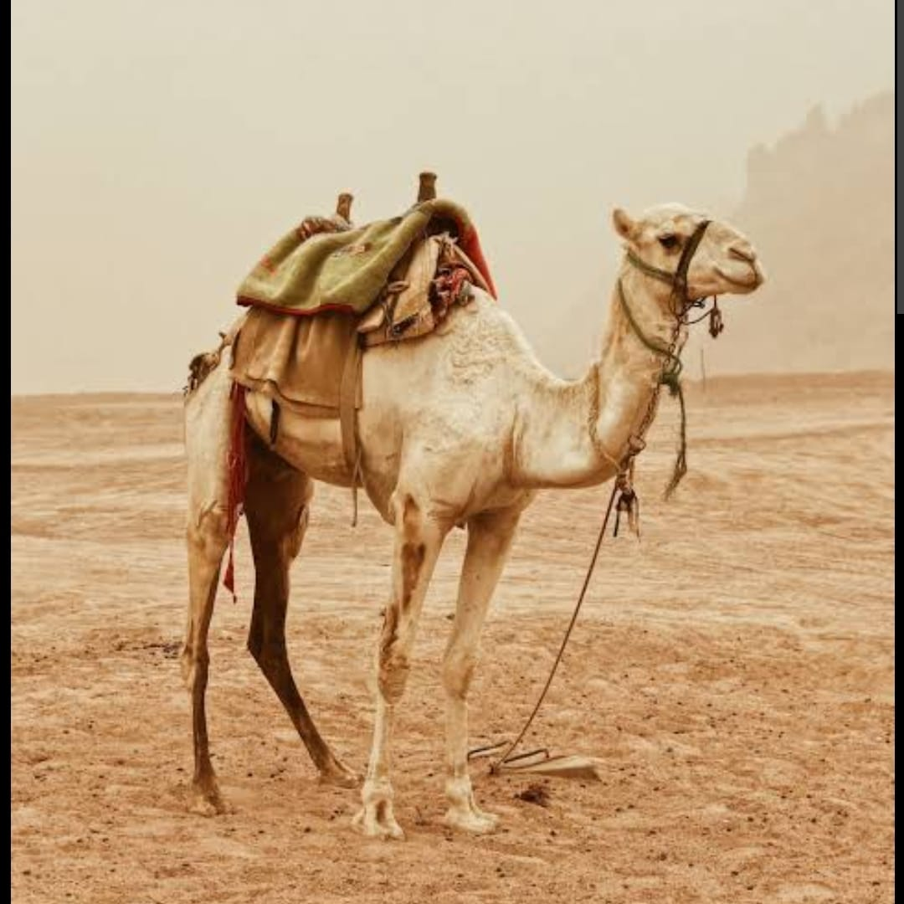

Features
Camels are renowned for their unique humps, with one or two, depending on the species. Contrary to popular belief, these humps don't store water but fat, providing energy in arid environments. Their long legs and padded feet help them navigate sandy terrain, and they're incredibly efficient in conserving water. These adaptations make camels well-suited for desert life, where they've played a crucial role in transportation and sustenance for generations.
Importance
Camels hold significant importance in regions with arid and desert environments. Their adaptability to extreme conditions, such as limited water and harsh temperatures, makes them invaluable. Camels are used for transportation, carrying goods and people across vast desert landscapes. They provide milk, meat, leather, and wool, serving as a vital source of sustenance for many communities. Their cultural significance is profound, as they are often woven into the fabric of traditional desert societies through art, folklore, and celebrations. In a world increasingly focused on sustainability, camels also represent a more eco-friendly mode of transport compared to motorized vehicles in these fragile ecosystems.
Cleaning kaktus in your backyard
Storing some fat for you